Biology is inherently
fasinatingfascinating
because its underlying components are in a state of constant flux. As products
of these same biological systems, we are naturally drawn to change; that which is
static rarely captures our curiosity. The timescales of these changes are dictated
by their complexity: more intricate transitions typically require higher activation
energies, necessitating longer waiting times. These slow, rate-limiting events
isare
often the most crucial, acting as primary determinants for the biological processes
that sustain life. As Aristotle's paradox suggests, the mechanics of life rely
entirely on this principle: it is fundamentally necessary, and therefore ultimately
likely, that these statistically unlikely rare events occur.
Biological macromolecules are not static entities; they are dynamic systems that
traverse complex energy landscapes. The functional versatility of proteins and
nucleic acids
emergeemerges
from a hierarchy of motions spanning over 15 orders of magnitude in time. While
rapid picosecond atomic fluctuations provide the basis for internal entropy, it is
the microsecond
(usµs)
to millisecond (ms) transitions that typically define functional cycles such as enzymatic
catalysis, signal transduction, and ion transport. Pathological states often arise
not from static structural deletions, but from the perturbation of these dynamical
landscapes, where mutations alter the populations and exchange rates of functional states.
HDX-MS monitors the rate at which backbone amide hydrogens are replaced by
deuterium in a
D2OD₂O
solvent. In a folded protein, this exchange is hindered by protection, namely the
structural and chemical barriers that sequester amides from the solvent. This
protection arises primarily from two sources: the involvement of the amide in
stable hydrogen-bonding networks (such as
alpha-helicesα-helices
or β-sheets) and
it'sits
physical burial within the protein's hydrophobic core. For exchange to occur,
these protections must be transiently lost through breathing motions or local
unfolding events, enabling spatiotemporally resolved maps of conformational dynamics.
Biomolecular processes are characterized by complexities spanning multiple
structural and functional hierarchies. Any biological process can be viewed as a
collection of correlated events
occuringoccurring
across a wide range of timescales. These events are traditionally defined as slow
and rate-limiting, where the system spends the vast majority of its time waiting
for a sufficient thermal fluctuation
,;
the actual traversal of the high-energy barrier occurs on a much faster, nearly
elusive timescale. The height of the barrier serves as a kinetic bottleneck that
dictates the characteristic timescale of the transition event.
The principles of parsimony are not merely philosophical axioms; they represent
a fundamental imperative in modern computational
biophyicsbiophysics.
Forcing a simulated molecular system to explicitly traverse massive thermodynamic
barriers through brute-force sampling is frequently
computationalycomputationally
wasteful, attempting to do with more what can theoretically be achieved with fewer.
Rather than exhaustively simulating rare transition events, advanced methodologies
strive to reconstruct the macroscopic free energy landscape from strictly necessary,
localized conformational data, fulfilling the ultimate scientific mandate of
Occam's Razor.
The differential catalytic activities observed in tyrosine kinases are generally
attributed to the cooperative assembly of key structural elements: the activation
loop, the Asp-Phe-Gly (DFG) motif, the phosphate-binding loop, and the
aC-helixαC-helix.
These rearrangements are associated with rate-limiting energy barriers of
approximately 15
kcal.mol-1kcal mol⁻¹,
in close agreement with experimental NMR estimates. Regulatory disruptions within
Abl can lead to hyperactivity, promoting a spectrum of malignancies; a common
scenario involves the constitutive activity resulting from fusion with the
breakpoint cluster region gene, leading to formation of the Philadelphia chromosome.
While established enhanced sampling techniques (Metadynamics, Umbrella Sampling,
and Replica Exchange Molecular Dynamics) have been instrumental in bridging this
gap, they frequently
encountersencounter
a rigid accuracy-cost trade-off. These methods often require either exorbitant
computational resources or rely heavily on the subjective, a priori selection of
low-dimensional collective variables, which can
inadvertantlyinadvertently
mask critical orthogonal degrees of freedom. Consequently, there remains a pressing
need for more efficient, objective, and statistically rigorous methodologies capable
of exploring these high-dimensional landscapes without sacrificing atomistic resolution.
The fundamental objective of modern computational biophysics is to decode the
complex thermo-kinetic rules that govern biomolecular function. While the underlying
atomic fluctuations occur on the femtosecond timescale, macroscopic conformational
changes dictating biological function often unfold over microseconds to milliseconds.
This temporal chasm creates the central sampling problem in standard Molecular
Dynamics simulations, where trajectories remain kinetically
trapedtrapped
within deep local energy minima, separated by substantial thermodynamic barriers
that are rarely crossed on accessible simulation timescales without deliberate
intervention,intervention.
Enhanced sampling methods fundamentally alter this exploration strategy by investing
energy in a controlled manner, thereby enabling the system to access otherwise
inaccessableinaccessible
regions of the landscape within feasible computational times.
Academic proofreading for researchers
Benjamin — AI academic proofreading for researchers: scientific manuscripts, research preprints, journal papers, and PhD theses in LaTeX, Word, and plain text

Reads your manuscript like a meticulous co-author
not just a grammar/spell-checker.
Benjamin reviews LaTeX, Word, plain-text, and RTF manuscripts — from research
preprints and journal papers to a full PhD thesis — with full scientific context
(units, equations, and terminology), then hands back a clean copy and a
complete tracked-changes review.
.tex
.zip
.docx
.txt
.md
.rtf